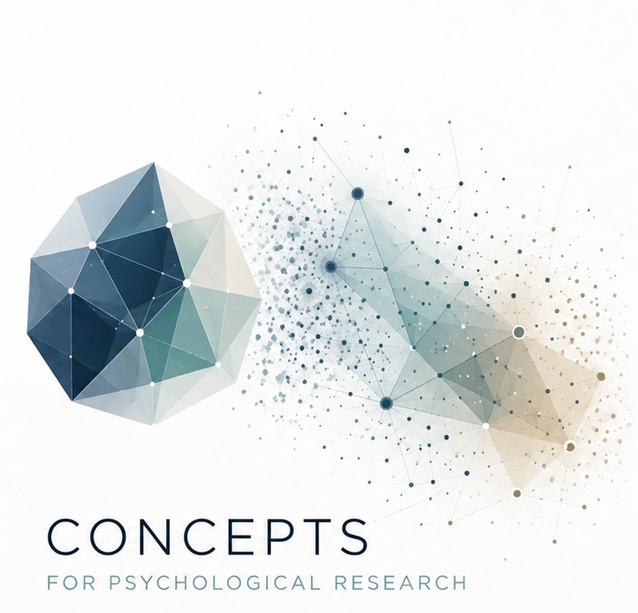
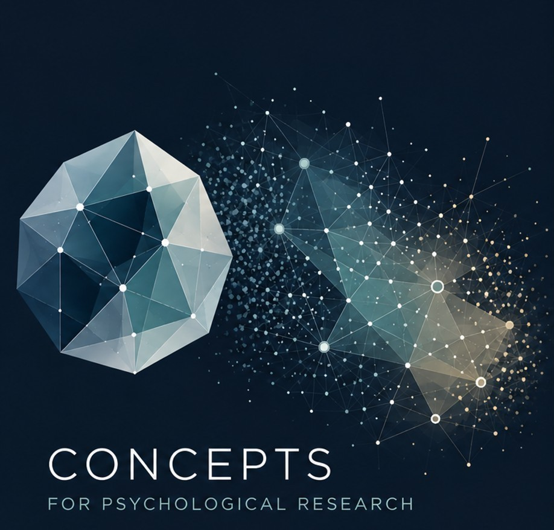

Methods Lab
Interactive visualizations for statistical methods — from simple regression through causal inference to psychometric models. No code required, every concept is directly experienceable.


Regression & Association
The foundation for every other section: how do you estimate linear relationships, what does "controlling for" actually mean, and how do you decompose effects into direct and indirect paths? From simple OLS regression through mediation and moderation to hierarchically nested data — these tools form the basis for understanding the statistical paradoxes in Section 3 and the causal methods in Section 4.
Inference & Planning
What does a p-value actually tell you? How large does a sample need to be? What counts as a meaningful effect? And what happens when data are missing? These questions determine the quality of every empirical study — before data collection and after it.
Statistical Paradoxes
Counter-intuitive effects that trip up even experienced researchers. All the paradoxes here rest on regression logic — which is why this section comes after the fundamentals. Once you understand Section 1, you'll see why these results are not surprising after all.
Causal Inference
Under what conditions is it justified to infer causation from association? This section covers the potential-outcomes framework, natural experiments and matching methods — the methodological toolkit of modern causal analysis.
Test Theory & Measurement
How do you measure psychological constructs, and how well does a test do it? From classical reliability to modern IRT models — this section covers the fundamentals of psychometrics.
Diagnostics & Test Quality
How well does an instrument detect what it is supposed to detect? Clinical and psychological diagnostics need precise indicators — from sensitivity and specificity through inter-rater agreement to differential validity.
Frequentist methods are covered here — but for priors, posterior distributions, ROPE decisions, Bayes factors and brms models, there's the Bayes Thinking Lab: interactive tools that explain Bayesian thinking from the ground up. The two labs complement each other: Lindley's Paradox, for example, needs both perspectives.